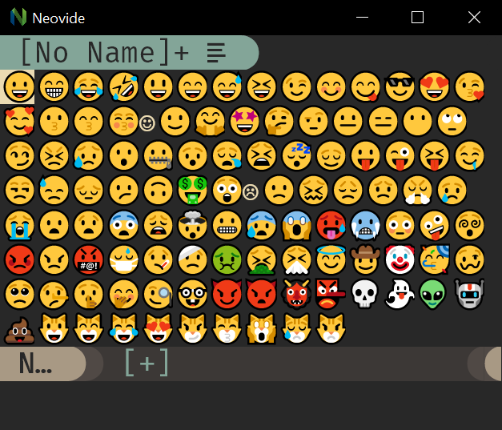
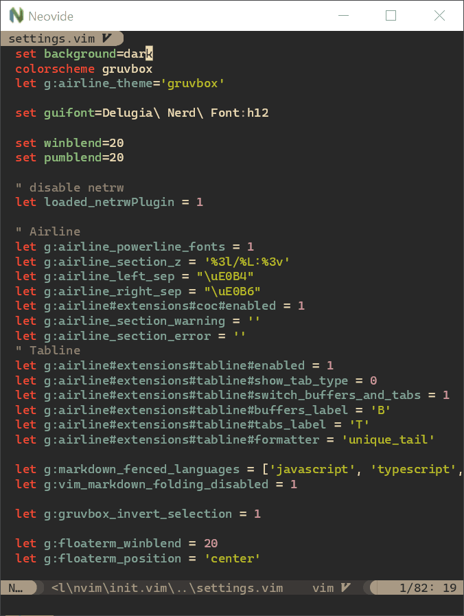
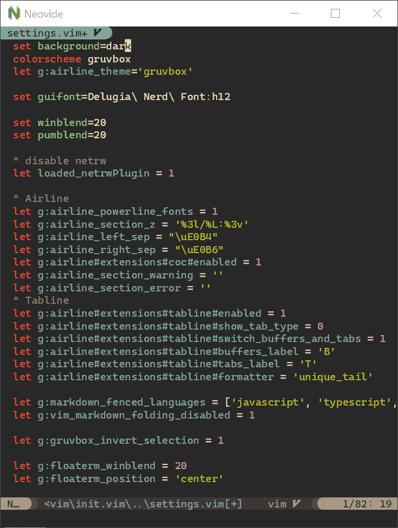

Features
This should be a standard, fully-featured Neovim GUI. Beyond that there are some visual niceties listed below :)
Ligatures
Supports ligatures and font shaping.

Animated Cursor
Cursor animates into position with a smear effect to improve tracking of cursor position.

Smooth Scrolling
Scroll operations on buffers in neovim will be animated smoothly pixel wise rather than line by line at a time.

Animated Windows
Windows animate into position when they are moved making it easier to see how layout changes happen.

Blurred Floating Windows
The backgrounds of floating windows are blurred improving the visual separation between foreground and background from built in window transparency.

Emoji Support
Font fallback supports rendering of emoji not contained in the configured font.
WSL Support
Neovide supports displaying a full gui window from inside wsl via the --wsl command argument.
Communication is passed via standard io into the wsl copy of neovim providing identical experience
similar to Visual Studio Code's
Remote Editing.
Connecting to an existing Neovim instance
Neovide supports connecting to an already running instance of Neovim through the following communication channels:
- TCP
- Unix domain sockets (Unix-like platforms only)
- Named pipes (Windows only)
This is enabled by specifying the --server <address> command line argument. The address is
interpreted as a TCP/IPv4/IPv6 address if it contains a colon :. Otherwise, it's
interpreted as a Unix domain socket path on Unix-like systems and as the name of a pipe on
Windows systems.
It's possible to quit the GUI while leaving the Neovim instance running by closing the Neovide
application window instead of issuing a :q command.
One use case is to attach a GUI running on a local machine to a Neovim instance on a remote machine over the network.
TCP Example
Note that exposing Neovim over TCP, even on localhost, is inherently less secure than using Unix Domain Sockets.
Launch Neovim as a TCP server (on port 6666) by running:
nvim --headless --listen localhost:6666
And then connect to it using:
/path/to/neovide --server=localhost:6666
By specifying to listen on localhost, you only allow connections from your local computer. If you are actually doing this over a network you will want to use SSH port forwarding for security, and then connect as before.
ssh -L 6666:localhost:6666 ip.of.other.machine nvim --headless --listen localhost:6666
Unix Domain Socket Example
Launch a Neovim instance listening on a Unix Domain Socket:
nvim --headless --listen some-existing-dir/my-nvim-instance.sock
And then connect to it using:
/path/to/neovide --server=some-existing-dir/my-nvim-instance.sock
Like TCP sockets, Unix Domain Sockets can be forwarded over SSH. Start a Neovim instance on another host with:
ssh -L /path/to/local/socket:/path/to/remote/socket ip.of.other.machine \
nvim --headless --listen /path/to/remote/socket
Then connect with:
/path/to/neovide --server=/path/to/local/socket
Windows Named Pipes Example
Launch a Neovim instances listening on a Named Pipe:
nvim --headless --listen //./pipe/some-known-pipe-name/with-optional-path
And then connect to it using:
/path/to/neovide --server=some-known-pipe-name/with-optional-path
Note: the pipe name passed to nvim must be prefixed with //./pipe/ but the server argument to
Neovide will add it if it is missing.
Some Nonsense ;)
To learn how to configure the following, head on over to the configuration section!
Railgun
Torpedo

Pixiedust
Sonic Boom